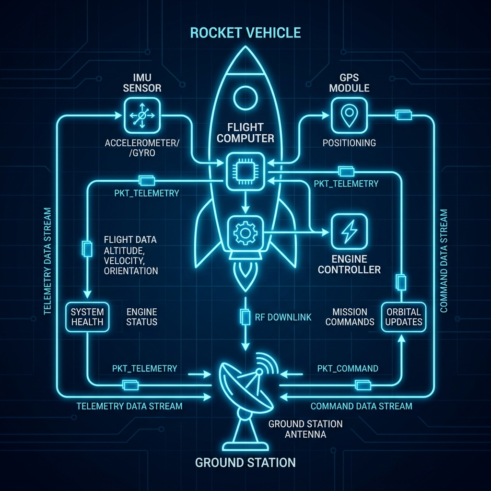

The Problem
In complex embedded environments—like rocket avionics stacks or multi-node satellite buses—standard communication protocols like I2C or raw UART lack the necessary reliability and determinism. Existing solutions like MAVLink are often too heavy or inflexible for bare-metal microcontroller environments with strict memory constraints.
The YAPEX Solution
YAPEX is a lightweight, strictly-defined binary communication protocol built for ultra-reliable inter-system telemetry and command exchange. It provides framing, addressing, payload specification, and integrity verification out of the box, with a memory footprint small enough to run on 8-bit microcontrollers.

Protocol Data Flow Diagram
Core Architecture
- Deterministic Framing: Every packet follows a strict header-payload-footer structure, ensuring predictable parsing times and zero dynamic memory allocation.
- Data Integrity: Hardware-accelerated CRC-16 checksums guarantee that corrupted packets are silently dropped before they can affect control loops.
- Transport Agnostic: The protocol layer is decoupled from the physical layer, meaning identical code can run over UART, SPI, CAN bus, or even UDP sockets in HIL simulations.
- Code Generation: Developers define messages in a YAML schema, and a python script automatically generates the optimized C serialization/deserialization headers, eliminating boilerplate and human error.